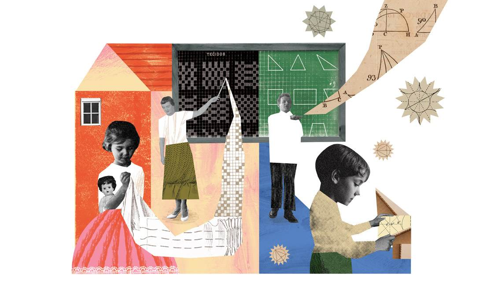

Avaliação na Educação
Acessar tabela de atividades
Letramentos e Alfabetização
Acessar tabela de atividades
Organização do Trabalho Pedagógico nos Anos Iniciais do Ensino Fundamental
Acessar tabela de atividades
Natureza e Sociedade
Acessar tabela de atividades
Práticas Pedagógicas: Identidade Docente
Acessar tabela de atividades

História da Educação (Adaptação - Especial)
Acessar tabela de atividades
Educação e Diversidade (Adaptação)
Acessar tabela de atividades
Didática (Adaptação - Especial)
Acessar tabela de atividades